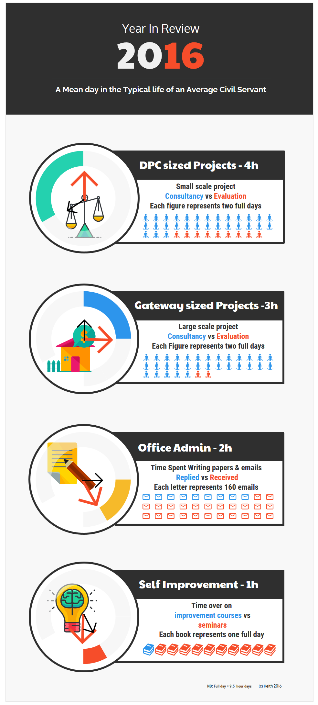

Ping An Notebook
Posted on Sun 23 March 2025 in Research • Tagged with financial statement, HKEX, portfolio, analysis
None
Continue reading
Continue reading
Posted on Sun 23 March 2025 in Research • Tagged with financial statement, HKEX, portfolio, analysis
Posted on Sat 04 March 2023 in Blog • Tagged with Govtech, mlops, chatgpt, llm, nlu

Chatgpt is the latest popular tech buzz around the block
It was published in singapore's mainstream paper that all civil servants will be using chatgpt for writing reports & speeches
It was also mentioned in parliament by Education Minister Chan Chun Sing quote "... artificial intelligence (AI) tool ChatGPT could be a useful tool for learning ... when students have mastered basic concepts and thinking skills" unquote
Posted on Mon 04 April 2022 in Blog • Tagged with Govtech, devops, mlops

Some years ago, I was working a typical Ministry desk job. Double hatting as a project auditor as well as a consultant. Due to the inherent conflicting nature of the job, it was important for me to keep document my thinking process and keep a timesheet on various projects I worked on. This was to ensure neutrality such that conflicts of interest can be minimised, essentially I should not be evaluating related projects that I was consulting for. The genesis of this blog was also somewhat related to logging down my thinking. This useful discipline of keeping logging and metrics is important in various domains.
Posted on Sun 06 December 2020 in Blog • Tagged with HDB, publicspace, diversity, Spatial Data Science

I remember during my graduate years finding a dissertation topic to write 10,000 words for, was a labourous affair. Grateful for my supervisor who was patient and enlightened to point me towards a direction to look but still not show me what I should 'see'. During time in academia, most tutors were deterministic rather than probabilistic and students were trained for specific skills with a mindset on what is good architecture. There were many ideas and interests given to explore, one could get 'lost'. The ability to distill multiple ideas into a singular captivating & writable topic does take considerable discipline in the both the arts and sciences to master.
Posted on Tue 25 February 2020 in Blog, matplotlib, • Tagged with design, logo, datadriven

It has been quite sometime since I sat down to draft an article. Usually it about data,figures and analyis. Which I currently do 110% of my time at work. Perhaps for a change, for this particular post I'll be sharing code for using data to design instead (^-^) The genesis of the design is inspired from some ideas I generated for my office collegue as a representation of the work we do. I did manage to get it printed as well. So if you get one from me it is a Limited Edition
Continue reading
Posted on Sat 18 May 2019 in Blog • Tagged with AI, book, review, library, markets

I just finished this book recently, and it sparked numerous ahha moments. Thus I highly recommend it for non-technical readers who are curious about AI and their impact on society. The author explains the concepts of superminds operating in society as a consequence of collective intelligence. He defines collective intelligence as the result of groups of individuals acting together in ways that seem intelligent or purposeful. This book teaches us how to recognise the characteristics of superminds and tap on their superpowers.
Posted on Wed 06 February 2019 in Blog • Tagged with Govtech, python, cryptography

Decided to give it a shot since I'm bored with CNY festivities in lala land.
Answer to the code is at the end of the post =), you can also
submit your answer by 11:59 pm, February 8 here: https://bit.ly/2RUVNBG
Continue reading
Posted on Tue 09 October 2018 in Blog • Tagged with SPPower, LNG, forcasting
Come 1st November, Singapore's retail electicity market will be liberalised. The electricity market will be a fully competitive market. Various power generating companies are now offering different packages to supply eletricity to the retail consumer. Honestly I think all the packages are confusing, with hidden costs like GST and Lost Transmission Factor these are not presented upfront to the consumer. Rather than comparing the indiviual pricing of all the packages which will be subject to change, I'll go through an anaylsis to make an informed choice of either a variable rate or fixed rate package.
Posted on Sun 09 September 2018 in Blog • Tagged with Seaborn, 02521-Data-Methods-1, MUSPP, Python, SUTD

Attended a basic R tutorial for my MUSPP class, everyone was tasked to estimate the heights of each other and record them into a table. This formed the dataset which we subsequently analysed using R. I'm repeating this exercise in Python as it is easier for me for analysis. Since I cant use python as the class assignments are based on R, I will try to do the python recoding for all my future assignments on this blog.

A curated list of data science notebooks to explore before the one year sprint begins =/